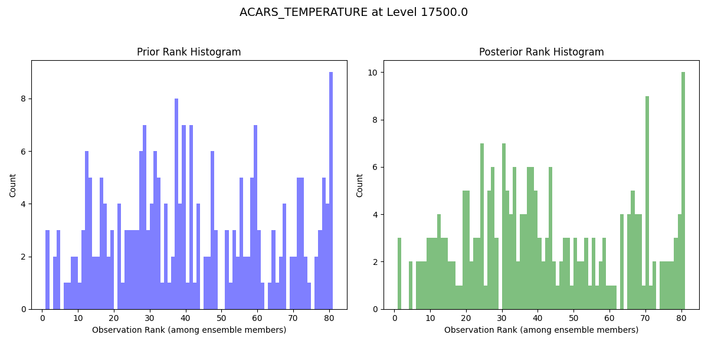
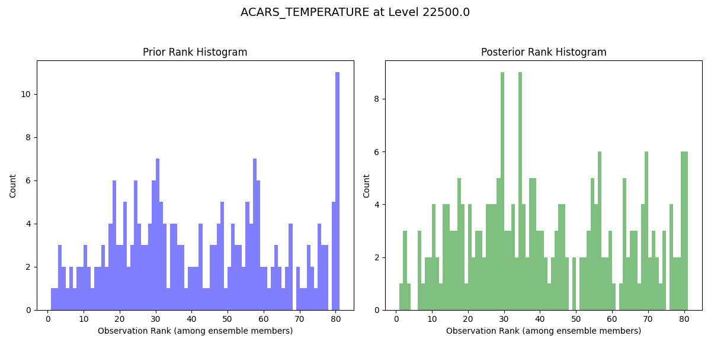
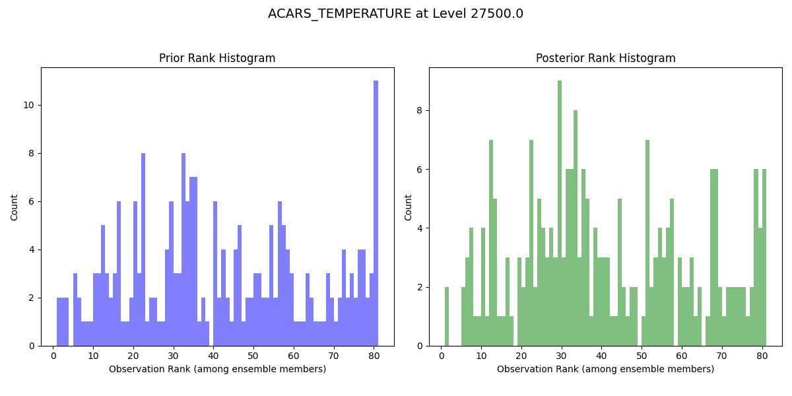
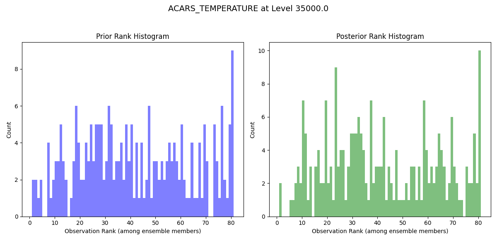
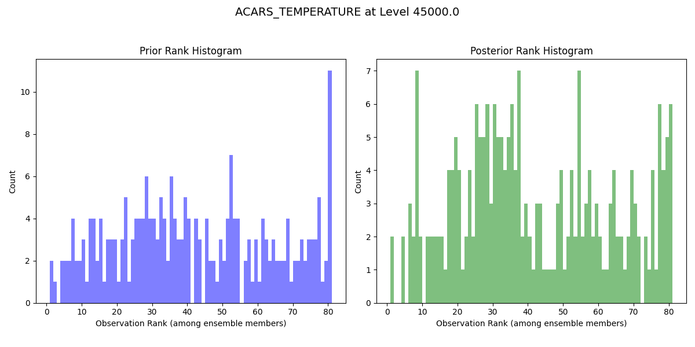
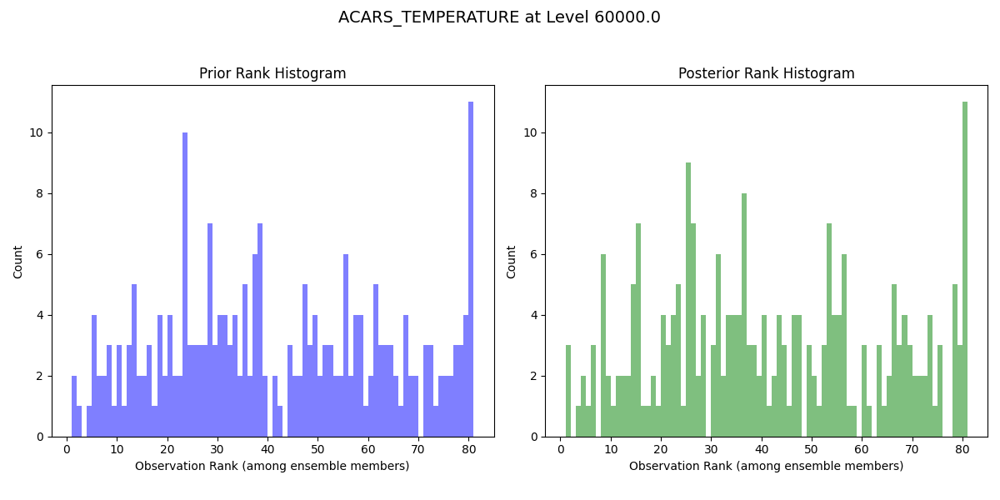
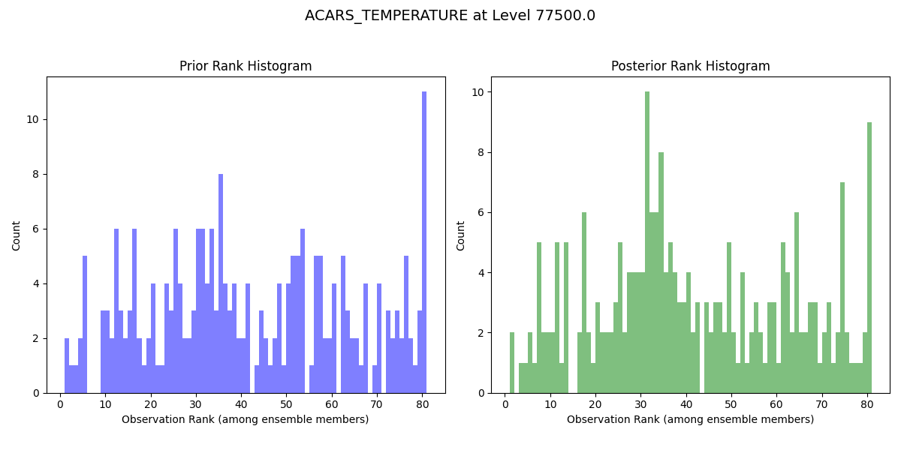

Note
Go to the end to download the full example code.
Rank Histogram#
This example demonstrates how to plot a rank histogram.
Import the obs_sequence module and the matplots module for plotting.
import pydartdiags.obs_sequence.obs_sequence as obsq
from pydartdiags.matplots import matplots as mp
Chose an obs_seq file to read.
In this example, we are using a small obs_seq file “obs_seq.final.1000”
that comes with the pyDARTdiags package
in the data directory, so we import os to get the path to the file.
import os
data_dir = os.path.join(os.getcwd(), "../..", "data")
data_file = os.path.join(data_dir, "obs_seq.final.1000")
Read the obs_seq file into an obs_seq object.
obs_seq = obsq.obs_sequence(data_file)
Chose an observation type. The observation types are stored in the ‘type’ column. To see which observation types are in the dataframe, use the unique method:
obs_seq.df['type'].unique()
array(['ACARS_TEMPERATURE', 'ACARS_U_WIND_COMPONENT',
'ACARS_V_WIND_COMPONENT', 'AIRCRAFT_TEMPERATURE',
'AIRCRAFT_U_WIND_COMPONENT', 'AIRCRAFT_V_WIND_COMPONENT'],
dtype=object)
For this example, we are going to look at the rank histogram for ACARS_TEMPERATURE observations.
obs_type = 'ACARS_TEMPERATURE'
Chose the levels to plot.
The vertical coordinate of the observations are stored in the vertical column.
The units for the vertical coordinate are stored in the vert_unit column
In this case the vertical coordinate of the observations are in pressure (Pa).
Typically in atmospheric science we use hPa as the unit for pressure.
hPalevels = [0.0, 100.0, 150.0, 200.0, 250.0, 300.0, 400.0, 500.0, 700, 850, 925, 1000]
levels = [i * 100 for i in hPalevels] # convert hPa to Pa
Plot the rank histogram. The dataframe has prior and posterior information so both the prior and posterior rank histograms are plotted.
ens_size = 80
fig = mp.plot_rank_histogram(obs_seq, levels, obs_type, ens_size)
- 
- 
- 
- 
- 
- 
- 
Total running time of the script: (0 minutes 2.518 seconds)